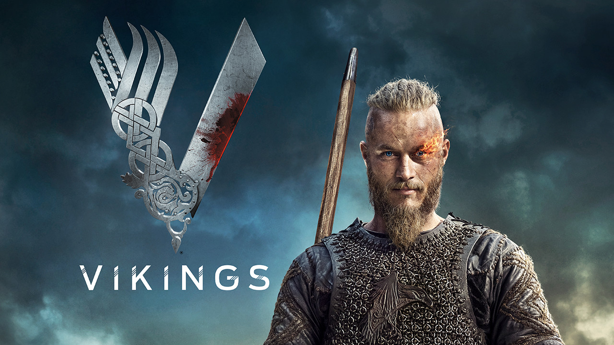

Merhaba ben Enes html ogreniyorum.
Vikings
Vikings, tarihsel drama türünde bir Kanada-İrlanda ortak yapımı televizyon dizisi. Yazarlığını ve yapımcılığını Michael Hirst'in yaptığı dizi History kanalında yayınlanmaktadır. ABD ve Kanada'da 3 Mart 2013 günü yayına başlamıştır.